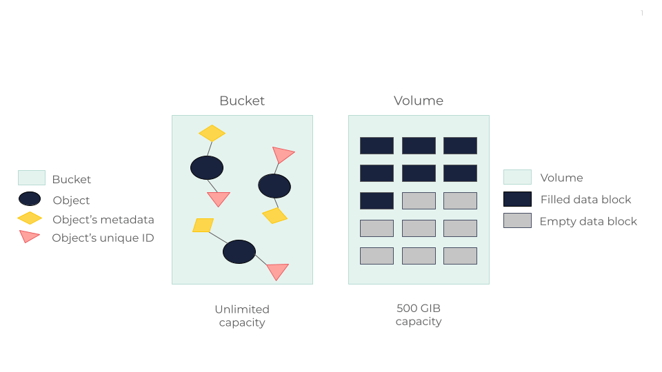

Object Storage VS Block Storage
This page aims to help you understand the key differences and advantages of the OUTSCALE Object Storage and Block Storage solutions. This comparison mainly focuses on core differences in architecture, performance, scalability, and use case suitability. By examining these aspects, we aim to provide a clear understanding of where each storage type excels, which in turn can help you make informed decisions based on your specific needs.
Definitions

Object Storage
OUTSCALE Object Storage (OOS) organizes data as discrete units known as objects, each coupled with metadata and a unique identifier. This makes it easier to store and retrieve data across distributed systems. Objects are stored in blocks and then distributed across Scality’s RING solution — a ring-shaped object storage architecture based on a peer-to-peer approach. For more information, see OOS Resilience Mechanisms.
From a user perspective, OOS allows to store data in containers known as buckets. This enables to manage large amounts of unstructured data by providing simple methods to retrieve and review comprehensive lists of objects and buckets. For more information, see Tools To Use OOS.
OOS is thus ideal for scaling and managing data in a highly accessible manner, without the intricacies of traditional hierarchical file systems.
Block Storage
OUTSCALE Block Storage organizes data into fixed-size data blocks, each with a unique identifier. This allows data to be stored and accessed in units known as blocks. This method treats storage volumes like individual hard drives that are accessed by a server-based operating system through low-level commands. These blocks can be configured and formatted with a file system, which is managed by the operating system, allowing applications to interact with the storage as if it were a local hard disk.
In a typical block storage setup, such as with NetApp systems, the physical disks are configured into large aggregates called disk arrays. These disk arrays collectively appear as a single volume of storage, which in turn can be further segmented into smaller, logical partitions that improve management and performance by spreading operations across multiple disks.
From a users' perspective, OUTSCALE Block Storage involves creating volumes that initially do not occupy the full selected capacity but can gradually expand as data is added. As volumes fill up, data is redistributed to other shards to manage space efficiently. This setup requires some foresight into your specific storage needs since costs can be higher, but it provides high performance and scalable storage solutions tailored to your needs. For more information, see Working with Volumes.
Comparison Table
| Category | Object Storage | Block Storage |
|---|---|---|
Architecture |
Data is managed as objects within flat namespaces called buckets. |
Data is organized into fixed-size data blocks, which are managed within storage volumes. |
Accessibility |
Accessed via AWS CLI (s3api, s3 and s3cmd). |
Accessed via Cockpit and both OSC CLI and AWS CLI. |
Data Accessibility |
Accessible anytime, anywhere and more flexible than hardware-dependent solutions. |
Need to be specifically attached to a Virtual Machine (VM) to use it. |
Data Mutability |
Not possible. |
Possible. |
Scalability |
Highly scalable horizontally, ideal for large amounts of unstructured data. |
Highly scalable. |
Recommendations |
Best for sharing data across multiple servers; object storage can emulate file systems for this purpose. |
Best for high-performance tasks. |
Use Case Suitability |
Ideal for big data, multimedia files, backups, and archival. Accessible remotely across different networks. |
Needed for Operating Systems (OS). Optimal for databases, and high-performance applications where continuous, intensive writing is needed. |
Conclusion
Block storage is designed for environments where frequent and rapid data access is crucial, making it suitable for systems that demand data persistence and low latency. However, it may not be as economical for scenarios like archival or backup, where data is accessed less frequently. In these cases, object storage can be more cost-effective due to its pricing model, which is based on access rather than just storage capacity.
Object storage offers several advantages, especially in environments with unpredictable data growth. It provides limitless scalability without the physical constraints of block storage systems and features API compliance with mechanisms like Access Key and Secret Key (AK/SK). This eliminates the need for pre-planning storage capacity, allowing organizations to adapt smoothly as their data needs grow. Additionally, object storage secures data immediately upon storage, enhancing data security efficiently.
These attributes make object storage a compelling option for applications that require extensive, scalable storage and seek to manage costs flexibly, as opposed to block storage which is better suited for environments that need consistent, high-speed data access.
Related Pages
AWS™ and Amazon Web Services™ are trademarks of Amazon Technologies, Inc or its affiliates in the United States and/or other countries.